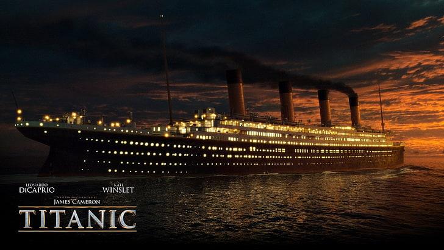

あらすじ

1912年、処女航海に出た豪華客船タイタニック号。新天地アメリカを目指す画家志望の青年ジャックと上流階級の娘ローズは船上で運命的な出会いを果たす。身分違いの恋を乗り越え強い絆で結ばれていく２人。しかし不沈を誇っていた豪華客船は皮肉な運命に見舞われる……。
セリーヌ・ディオンが歌う主題歌「マイ・ハート・ウィル・ゴー・オン」（1,800万枚の大ヒット）と、船首でケイト・ウィンスレットをレオナルド・ディカプリオがバックハグするシーンがあまりにも有名 アカデミー最多受賞記録（11部門）を保持（1959年公開の「ベンハー」、2003年公開の「ロード・オブ・ザ・リング/王の帰還」と並ぶ） 公開時、世界歴代映画興行収入No.1の映画になる（22億ドルを稼ぎ出し、2009年に同じキャメロン監督の「アバター」（30億ドル）に抜かれるまで1位。現在は3位）

1912年、処女航海に出た豪華客船タイタニック号。新天地アメリカを目指す画家志望の青年ジャックと上流階級の娘ローズは船上で運命的な出会いを果たす。身分違いの恋を乗り越え強い絆で結ばれていく２人。しかし不沈を誇っていた豪華客船は皮肉な運命に見舞われる……。
レオナルドディカプリオ：ジャックドーソン役
主人公で年齢はアメリカの公式サイトによると20歳。15歳で天涯孤独となり、サンタモニカの似顔絵描きで稼いだ金でパリへ行き画家稼業をしていたそうです。ポーカーでタイタニックの切符を手に入れ、ローズと出会う。
ケイトウィンスレット：ローズデウィットブケイター役
裕福な上流階級の17歳で富豪であるホックリーと政略結婚を母から強制され、決められた人生に絶望し自殺を試みたがジャックに救われる。
ジャックの言ったセリフ
「大切なものはすでに揃ってる。健康な体とスケッチブック。」
「橋の下で眠ることもあれば、世界一の豪華客船でシャンパン」
ジャックは何が起こるか分からない生活をしていることに誇りを持っています。人生が楽しいか楽しくないかは自分の気持ち次第だと私はこの映画を通して感じることができました。